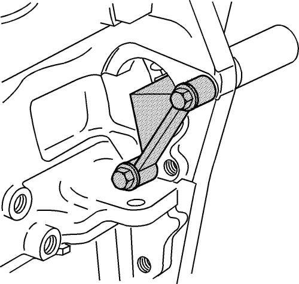
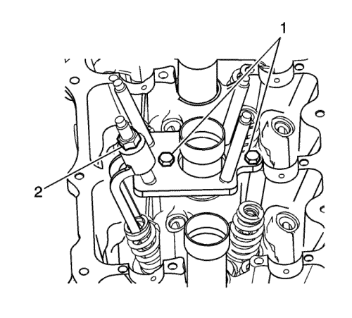
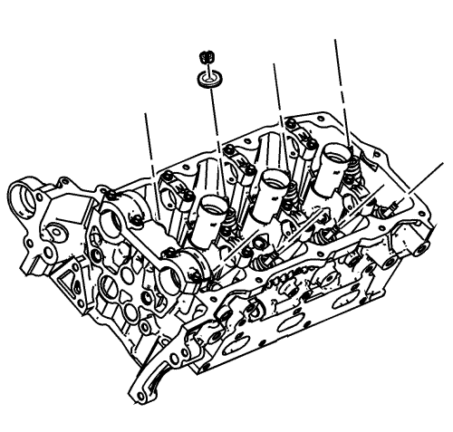
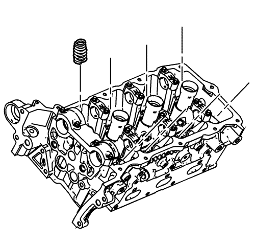
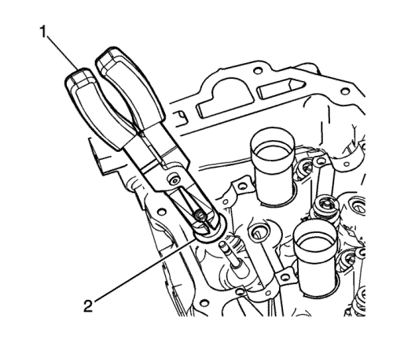

Sustitución del muelle de válvula y del retén de aceite del vástago de válvula - Lado derecho
Herramientas requeridas
| • | Herramienta de sujeción del volante motor EN 46106 |
| • | EN 46110 Compresor de muelles de válvula en el vehículo |
| • | Herramienta de desmontaje y montaje de la junta de vástago de válvula EN 46116 |
| • | J 39313 Adaptador de lumbrera de bujía |
Procedimiento de desmontaje
- Desmonte el motor de arranque. Consultar Sustitución del motor de arranque : LNQ → LF1 → LE5 .

Importante: Si no está instalada la EN 46106, es posible que rote el cigüeñal. Si rota el cigüeñal, puede que se requiera el desmontaje y remontaje de todo el sistema de la cadena de distribución.
- Monte la EN 46106 para impedir la rotación del cigüeñal.
- Desmonte los árboles de levas y los balancines. Consultar Sustitución de los árboles de levas - lado derecho .
- Desmonte la bujía del cilindro correspondiente. Consultar Sustitución de la bujía .
- Instale el J 39313 en el cilindro correspondiente.
- Conecte el J 39313 a una fuente de aire comprimido.

- Monte el EN 46110 encima del cilindro correspondiente, como se muestra.
- Apriete la tuerca (2) del compresor de muelles de válvula EN 46110.

- Extraiga las abrazaderas de válvula.
- Suelte la tuerca del compresor de muelles de válvula EN 46110.
- Desmonte el seguro del muelle de la válvula.

- Desmonte los muelles de válvula.

- Use la EN 46116 (1) para desmontar el retén (2) del vástago de válvula.
Procedimiento de montaje
- Use la EN 46116 (1) para montar los retenes (2) del vástago de válvula.
- Monte el muelle de la válvula.
- Monte el seguro del muelle de la válvula.
- Monte el EN 46110 encima del muelle de válvula correspondiente, como se muestra.
Apriete la tuerca (2) del compresor de muelles de válvula EN 46110.
- Monte las abrazaderas del muelle de la válvula.
- Desmonte la herramienta EN 46110.
- Desconecte el J 39313 de la fuente de aire comprimido.
- Desmonte el J 39313.
- Monte las bujías. Consultar Sustitución de la bujía .
- Monte los balancines y los árboles de levas. Consultar Sustitución de los árboles de levas - lado derecho .
- Desmonte la herramienta EN 46106.
- Monte el motor del motor de arranque. Consultar Sustitución del motor de arranque : LNQ → LF1 → LE5 .
| © Copyright Chevrolet Europe. All rights reserved |